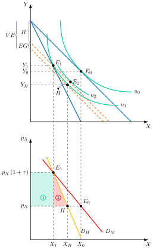
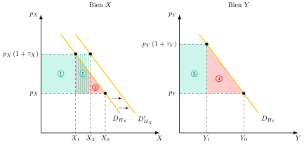
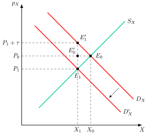
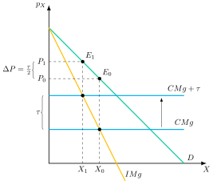
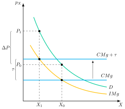
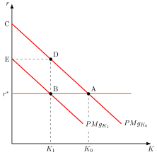
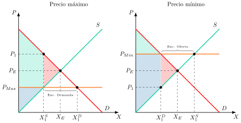
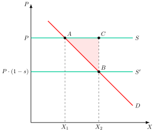

Apuntes para la oposición al Cuerpo de Diplomados Comerciales del Estado
20 Teoría de la imposición: traslación e incidencia de los impuestos. Enfoques de equilibrio parcial y general. Efecto renta y efecto sustitución de los impuestos. Concepto y medición del exceso de gravamen.
20.1 Introducción  1'
1'
La Economía del Sector Público estudia cómo la autoridad pública interviene en el mercado mediante ingresos y gastos para cumplir con funciones de asignación, distribución y estabilidad. Para financiar estas acciones, el Estado recurre a impuestos, definidos como transferencias coactivas del sector privado al sector público, exigidas en virtud del principio de autoridad y sin contraprestación directa.
Pero un impuesto cuesta más que lo que recauda. Al alterar los precios relativos genera una pérdida de eficiencia que nadie recibe y, además, quien lo soporta realmente no tiene por qué ser quien lo ingresa en Hacienda. De ahí surgen dos preguntas: ¿cuánto cuesta, en eficiencia, recaudar un euro? y ¿quién paga realmente ese euro?
La presente exposición responde a ambas preguntas a través del siguiente esquema:
Exceso de gravamen: concepto y medición, a partir de los efectos renta y sustitución.
Incidencia y traslación de impuestos, en equilibrio parcial y general.
20.2 Exceso de gravamen: concepto y medición 10'
Comenzando con el exceso de gravamen, todo impuesto disminuye el bienestar de los individuos y afecta a su comportamiento al producir un:
Efecto renta: pérdida de poder adquisitivo que supone pagar el impuesto, cuyo equivalente monetario es la recaudación. Todos los impuestos que dan lugar a un mismo volumen de recaudación tienen el mismo efecto renta.
Efecto sustitución: cambio en las decisiones de los individuos, que sustituyen lo gravado por lo no gravado porque el impuesto altera los precios relativos.1 Así, los agentes tomarán sus decisiones influidos por criterios fiscales, lo cual genera una caída del bienestar que, al contrario de lo que ocurre con el efecto renta, no pasa a formar parte de la recaudación. Esta pérdida de bienestar social derivada del efecto sustitución es lo que se conoce como exceso de gravamen (EG).
A las distorsiones consecuencia del efecto sustitución se las denomina coste de eficiencia o exceso de gravamen de los impuestos, debido a que como consecuencia de los impuestos distorsionantes se alteran los precios relativos introduciendo la denominada “cuña fiscal”2, entre los precios pagados por los consumidores y los percibidos por los productores, por lo que estos dejan de ser señales correctas de la escasez de bienes en los mercados, no cumpliéndose la condición de eficiencia paretiana3.
Esta distinción entre efecto renta y efecto sustitución es importante porque, dada la inevitabilidad del efecto renta, el objetivo del diseño del sistema tributario, desde el punto de vista de la eficiencia, será minimizar el exceso de gravamen.
Concretamente, el único impuesto que no es distorsionante es el de suma fija, ya que no altera los precios relativos, tan solo generando un efecto renta puro456.
No obstante, hay que señalar que los impuestos de suma fija, a cambio de ser eficientes, son altamente inequitativos, ya que al gravar por igual a todos los individuos con independencia de su nivel de renta, funcionan de forma regresiva7. De esta manera, se suelen usar impuestos distorsionantes, por lo que se estudiará primero cómo actúan sobre el comportamiento de los agentes y después se medirá su impacto en la economía.
Efecto renta y efecto sustitución según el impuesto
El peso relativo de los efectos renta y sustitución depende de la figura impositiva. Considerando un individuo que elige entre consumir, disfrutar de ocio (o trabajar) y ahorrar (Albi et al. 2018):
Impuesto de suma fija: solo genera efecto renta, porque no altera ningún precio relativo. Por eso no distorsiona y su exceso de gravamen es nulo.
Impuesto selectivo sobre un bien: encarece ese bien frente a los demás y frente al ocio, y el consumidor lo sustituye por otros bienes y por ocio. Genera efecto renta y efecto sustitución, y el coste de la distorsión es mayor cuanto más elástica es la demanda compensada del bien.
Impuesto general sobre el consumo: no altera el precio relativo entre bienes, de modo que entre ellos solo hay efecto renta. Pero, como el ocio no está gravado, encarece el consumo frente al ocio y desincentiva la oferta de trabajo. Equivale a un impuesto sobre los salarios si el trabajo es la única fuente de renta y no hay ahorro, y su coste es menor cuanto más inelástica es la oferta de trabajo compensada. Con oferta de trabajo fija sería eficiente (Auerbach 1985, 109).
Impuesto sobre los salarios o sobre la renta: el efecto sustitución reduce la oferta de trabajo, porque el ocio resulta más barato, y el efecto renta la aumenta, porque hay que trabajar más para mantener el consumo. El resultado es indeterminado y debe resolverse con evidencia empírica, pero la oferta de trabajo siempre es menor que con un impuesto de suma fija de igual recaudación. La evidencia sugiere que, para los trabajadores principales, el efecto sobre la oferta de trabajo es pequeño, pero que puede reducir de forma significativa la oferta de trabajo y la participación de las mujeres (Albi et al. 2018).
Impuesto sobre los rendimientos del ahorro: reduce el tipo de interés que recibe el ahorrador. El efecto sustitución abarata el consumo presente y reduce el ahorro, mientras que el efecto renta reduce el consumo presente y aumenta el ahorro. El resultado es también indeterminado.
En todos los casos solo el efecto sustitución genera exceso de gravamen. Por eso, para una recaudación dada, el objetivo del diseño impositivo es minimizarlo, y a continuación se estudia cómo medirlo.
Medición del exceso de gravamen
Para medir el exceso de gravamen, en la teoría de la imposición se utiliza el equivalente monetario de la disminución de bienestar que no se traduce en recaudación (Auerbach 1985). Alternativamente, puede definirse como el exceso de carga impositiva en relación con la que habría producido un impuesto de suma fija de cuantía igual a la recaudación necesaria.
La técnica de medición se basa en la variación equivalente, que puede calcularse con la demanda compensada (hicksiana) y permite evaluar en términos monetarios el cambio de bienestar para un nivel de utilidad dado. A continuación, se verá cómo se puede otorgar un valor monetario al exceso de gravamen en equilibrio parcial, a través de los métodos de la variación equivalente y de la variación de excedentes8.
Para ello se supondrá:
Una economía donde existen 2 bienes, \(X\) e \(Y\), donde el bien \(Y\) es numerario, es decir \(P_{Y}=1\).
El precio competitivo de la demanda de una unidad es igual al valor marginal para el consumidor.
El precio competitivo de oferta de una unidad representa el valor marginal en producción.
Solo se analiza la eficiencia, es decir, la distribución del impuesto va a ser irrelevante.
Estos supuestos van a permitir relacionar precios y utilidad pudiendo cuantificar en unidades monetarias los cambios en el bienestar.
Medición
La idea intuitiva que explica la aparición del exceso de gravamen vincula el coste de ineficiencia al efecto sustitución.
Gráficamente, en un plano de cantidades \(X\) e \(Y\), como el de la Figura 20.1, se puede representar el equilibrio de partida de la economía antes de introducir el impuesto en el punto \(E_{0}\), que representa el punto tangente entre la recta de balance –con pendiente \(P_{X}\)– y la curva de indiferencia más alejada del origen, \(u_{0}\). Si se introduce un impuesto sobre el consumo de \(X\), el precio de \(X\), \(P_{X}\), será mayor y la pendiente de la recta de balance cambiará, ahora será mayor y se llegará a un equilibrio en \(E_{1}\), tangente a la curva de indiferencia \(u_{1}\), dando lugar a una pérdida de bienestar.

Para medir monetariamente el cambio de bienestar producido se recurrirá al método de la variación equivalente, que mide a cuánta renta estaría dispuesto a renunciar el consumidor para evitar el impuesto. Para ello, se traslada la antigua recta presupuestaria hasta la nueva utilidad hasta que sea tangente, en el punto H, obteniendo la variación equivalente, \(VE\). Así, el consumidor estaría dispuesto a renunciar a VE unidades de renta para evitar el impuesto, representando el cambio de bienestar debido al impuesto en términos monetarios.
Sin embargo, el problema es que esa cantidad refleja una caída de bienestar que tiene 2 orígenes9:
Efecto renta: dicho efecto, \(ER\), mide la recaudación, \(R\), del Gobierno, y será aquella cantidad de renta que hay que restar a la renta inicial para adquirir la cesta \(E_{1}\). Gráficamente, desplazamos la recta presupuestaria inicial hasta que corte a \(E_{1}\).
Si el impuesto, en lugar de ser distorsionante, hubiera sido de suma fija, la restricción presupuestaria se habría desplazado paralelamente hacia abajo hasta pasar por \(E_{1}\) (desplazamiento de la recta presupuestaria inicial hasta que cruza la cesta final (Slutsky)). Así, la cuantificación monetaria de la recaudación (esto es, la pérdida de bienestar asociada al efecto renta) es \(ER\) (si Y es numerario; si no, \(ER\cdot P_{Y}\))Efecto sustitución o exceso de gravamen: en esta nueva restricción presupuestaria el consumidor podría situarse en un punto como \(E_{2}\) que le reporta mayor utilidad que \(E_{\text{1}}\), \(u_{2}>u_{1}\), es decir, con un impuesto de suma fija que detrajese directamente del individuo la cantidad que se deseaba recaudar, éste hubiese disfrutado de un mayor nivel de bienestar. Sin embargo, la alteración de los precios relativos provoca una pérdida de bienestar adicional que no se traduce en una mayor recaudación. Esa pérdida es el efecto sustitución, \(ES\), o exceso de gravamen, \(EG\). \[ES=VE-ER=EG \tag{20.1}\]
El problema del método de la variación equivalente es que exige conocer las curvas de indiferencia, lo cual es complicado. Por ello, en la práctica, es un método difícilmente utilizable.
Por otro lado, la reducción del bienestar y el exceso de gravamen se pueden medir a través de las curvas de demanda (excedentes), es decir, en términos de la demanda compensada (hicksiana) asociada a la utilidad \(u_{1}\). Se trasladarían todos los puntos a un plano adyacente y, uniendo \(E_{1}\) con \(E_{0}\) se obtendría la demanda ordinaria –que relaciona cantidades demandadas con precios, para un nivel de renta dado– y uniendo \(E_{1}\) con \(H\) se obtendría la demanda compensada hicksiana –que relaciona cantidades demandadas con precios, manteniendo el nivel de utilidad constante, concretamente en \(u_{1}\)–, dando lugar a dos áreas. La suma de ambas sería el cambio en el bienestar, el área 1 la recaudación y el área 2 el exceso de gravamen.
Analíticamente, el exceso de gravamen puede aproximarse a dicho triángulo del área 2 como10 \[EG=-\dfrac{1}{2}\cdot\varepsilon_{p,h}\cdot\left(p_{X}\cdot X_{H}\right)\cdot\tau^{2} \tag{20.2}\] donde \(\varepsilon_{p,h}<0\) es la elasticidad-precio de la demanda compensada de \(X\), \(p_{X}\cdot X_{H}\) el gasto en \(X\) neto de impuesto y \(\tau\) el tipo impositivo ad valorem sobre \(X\). El signo menos hace positivo el resultado porque \(\varepsilon_{p,h}\) es negativa.
Las implicaciones de política económica serían que para reducir el exceso de gravamen (es decir, ineficiencia) de un sistema impositivo, es necesario1112:
Gravar bienes cuya demanda sea inelástica (es decir, bienes con pocos sustitutivos).
Gravar bienes que no tengan un peso importante en la cesta de los individuos.
Establecer un tipo lo más bajo posible y, sobre todo, constante (suavización impositiva). De esta forma, el déficit público será contracíclico y el papel de la deuda será absorber los shocks.
El problema del método de los excedentes es que la demanda compensada no suele ser observable. Por ello, una alternativa imperfecta pero mucho más sencilla será medir el excedente del consumidor utilizando la demanda ordinaria (o demanda marshalliana)13.
Costes del sistema fiscal sobre el bienestar
Por otro lado, para analizar los costes sobre el bienestar del sistema fiscal a nivel agregado hay que tener en cuenta las relaciones de sustituibilidad y complementariedad entre los bienes, es decir, no será posible sumar los excesos de gravamen de forma individual de cada uno de los impuestos sin tener en cuenta los otros impuestos.
El motivo está relacionado con la teoría del second best, según la cual, cuando existe una distorsión que no puede eliminarse, acercarse a las demás condiciones de eficiencia no garantiza más bienestar. Aplicada a los impuestos, si ya existe un impuesto distorsionante no es posible asegurar a priori que otro impuesto aumente el coste de eficiencia del sistema, e incluso puede reducirlo. Este resultado se explica por la interdependencia de mercados.
Para su análisis, se supondrán:
Una economía con 2 bienes que son sustitutivos producidos en condiciones en las que los costes marginales son constantes14, de forma que la oferta es perfectamente elástica y el impuesto recae sobre los consumidores y
Por simplicidad, se va a suponer que los efectos rentas son de una magnitud despreciable, por lo que se van a analizar demandas compensadas.
Gráficamente, en un plano \(P_{x}\) y \(x\), como el de la Figura 20.2, se representa la demanda compensada de \(x\), \(D_{H_{x}}\) y de forma análoga con el bien \(y\). El bien \(x\) se someterá a un impuesto, aumentando el precio, \(p_{X}\left(1+\tau_{X}\right),\) y generando dos áreas, 1 y 2, donde el exceso de gravamen será igual al área 2.
Para contrarrestar la disminución en las ventas de \(x\), se decidirá gravar también el bien \(y\) que es sustitutivo de \(x\) a un tipo \(\tau_{y}\), que no necesariamente tiene que ser igual a \(\tau_{x}\), generando dos áreas donde el exceso de gravamen quedará determinado por el área \(4\).
Sin embargo, como son sustitutivos la disminución en la producción de \(y\) aumentará la demanda de \(x\), por lo que la demanda compensada de \(x\) se desplazará hacia la derecha. La recaudación del impuesto \(\tau_{x}\) aumentará en el rectángulo 5 sin disminuir el bienestar, recaudación que puede devolverse al contribuyente, aumentando así su utilidad y pudiendo compensar la pérdida en términos de bienestar producida por el exceso de gravamen, producida a su vez por el impuesto distorsionante establecido en el mercado de \(y\).

Por tanto, el efecto total del nuevo impuesto sobre el exceso de gravamen del sistema fiscal es indeterminado. Es decir, aunque la introducción del nuevo impuesto genera una pérdida de bienestar (es decir, exceso de gravamen) en ese mercado, esta pérdida podría verse más que compensada por el efecto positivo sobre el otro mercado.
En definitiva, el exceso de gravamen del sistema fiscal no es la mera suma de los excesos de gravamen de los impuestos individuales considerados por separado, pues existen relaciones de complementariedad y sustituibilidad entre los bienes. Si hay impuestos preexistentes la introducción de un nuevo impuesto puede aumentar la eficiencia del sistema.
En suma, el exceso de gravamen del sistema fiscal dependerá del tipo de bienes:
Bienes independientes: suma de los excesos de gravamen en cada mercado.
Bienes sustitutivos: menor que la suma de los excesos de gravamen en cada mercado (pues aumenta la recaudación en el otro bien).
Bienes complementarios: mayor que la suma de los excesos de gravamen en cada mercado (pues disminuye la recaudación en el otro bien).
Por otro lado, para obtener el exceso de gravamen del sistema fiscal sería necesario comparar el exceso de gravamen de cada mercado y el incremento de la recaudación, por lo que ahora el exceso de gravamen sería el sumatorio de \(n\) bienes de consumo, multiplicado al cambio en la demanda compensada de \(i\) al variar el precio de \(j\) o efecto sustitución entre los bienes \(i\) y \(j\), \(S_{ij}\), por los precios y por los tipos impositivos1516:
\[EG=-\dfrac{1}{2}\cdot\sum\limits_{i=1}^{n}\sum\limits_{j=1}^{n}S_{ij}\cdot p_{i}\cdot p_{j}\cdot t_{i}\cdot t_{j} \tag{20.3}\] Los términos con \(i\neq j\) recogen las relaciones entre bienes: \(S_{ij}\) es positivo si \(i\) y \(j\) son sustitutivos, lo que reduce el exceso de gravamen del sistema, y negativo si son complementarios, lo que lo aumenta, como muestran los casos anteriores.
Sin embargo, los impuestos no solo afectan a la eficiencia sino que también tienen implicaciones en términos de equidad ya que, habitualmente, el diseño del sistema fiscal combina impuestos regresivos y progresivos.
Por ello, para conocer el verdadero efecto de los impuestos sobre la distribución de la renta, a continuación se estudia la traslación y la incidencia de los impuestos, primero mediante un análisis de equilibrio parcial –considerando un único mercado– y, después, mediante un enfoque de equilibrio general –considerando las interrelaciones entre sectores–.
20.3 Incidencia y traslación de impuestos 8'
Una vez analizado el exceso de gravamen, se va a analizar tanto la incidencia como la traslación de los impuestos. La incidencia hace referencia a sobre quién recae el impuesto, es decir, quién soporta su carga. Se diferencia entre:
Incidencia legal, es decir, quién debe pagar el impuesto según la ley.
Incidencia económica, es decir, quién soporta realmente la carga del impuesto a través de los cambios de precios que provoca.
Generalmente, ambas incidencias no coinciden por lo que el impuesto es objeto de traslación impositiva17 que puede ser total o parcial. Para conocer el efecto de los impuestos en la distribución de la renta hay que estudiar, por tanto, cómo la traslación separa la incidencia económica de la legal. Además, se puede analizar desde un punto de vista de equilibrio parcial o general.
Equilibrio parcial
Comenzando por un análisis de equilibrio parcial, es decir, solamente teniendo en cuenta el mercado que es objeto del impuesto, este es un análisis solamente válido para mercados pequeños. Además, se asume que se va a analizar la incidencia absoluta sin tener en cuenta el destino de la recaudación.
Competencia perfecta
Asumiendo un mercado en competencia perfecta18, gráficamente, en un plano de cantidades de \(X\) y \(p_{X}\) como el de la Figura 20.3 el equilibrio \(E_{0}\) se va a determinar entre la intersección entre la oferta, \(S_{x}\), y la demanda, \(D_{x}\), de \(X\). Se va a introducir un impuesto unitario19 sobre el consumo, \(\tau\), por ejemplo, sobre los hidrocarburos, por lo que el consumidor tendrá que pagar el precio que recibe el productor más el impuesto, \(P_{1}+\tau\), para consumir \(X\). Así, la demanda tal como la perciben los productores se desplaza hacia abajo en la cuantía del impuesto, \(D^{'}_{X}\), porque por cada unidad solo reciben lo que paga el consumidor menos \(\tau\).
Si el productor se mantuviera en un precio \(P_{0}\) como el inicial, existirá un exceso de oferta, lo que obliga a los productores a disminuir los precios hasta \(P_{1}\). El impuesto recae legalmente sobre el consumidor, pero este puede trasladar parte de la carga al productor mediante la caída de la demanda. En el nuevo equilibrio \(E_{1}\), el consumidor paga \(P_{1}+\tau\) (punto \(E^{\prime}_{1}\)) y el productor recibe \(P_{1}\). El segmento \(E^{\prime}_{1}E_{1}\) es la cuña impositiva \(\tau\): el tramo \(E^{\prime}_{1}E^{\prime}_{0}\), de valor \(P_{1}+\tau-P_{0}\), lo soporta el consumidor, y el tramo \(E^{\prime}_{0}E_{1}\), de valor \(P_{0}-P_{1}\), lo traslada al productor.

Asimismo, se observa que:
El triángulo \(E^{\prime}_{1}E_{0}E_{1}\) representa la pérdida de eficiencia o exceso de gravamen.
La recaudación impositiva sería el rectángulo entre los nuevos precios y los nuevos equilibrios, \(P_{1}+\tau,P_{1},E_{1},E^{\prime}_{1}\).
El precio pagado por el consumidor es superior al inicial, \(P_{1}+\tau>P_{0}\), lo que reduce el excedente del consumidor.
El precio percibido por el productor es inferior al inicial, \(P_{1}<P_{0}\), lo que reduce el excedente del productor.
En este contexto, como afirma la ley de Dalton (Dalton 1936, 73)20 la incidencia económica de un impuesto en un mercado competitivo se reparte entre oferentes y demandantes de acuerdo con la elasticidad-precio de la oferta y de la demanda, con independencia de sobre quién recaiga la incidencia legal, de manera que el impuesto recaerá más sobre el agente cuya elasticidad-precio sea relativamente menor en valor absoluto2122.
En suma23:
La incidencia legal no tiene ningún efecto sobre la incidencia económica.
La incidencia económica depende de las elasticidades-precio relativas
Por otro lado, un impuesto ad valorem cambiaría la pendiente de la demanda pero el resultado sería similar, mientras que un impuesto sobre los beneficios puros, es decir, sobre los ingresos menos todos los costes, incluida la rentabilidad normal del capital, no provocaría un exceso de gravamen, ya que no cambia los precios relativos y sus efectos serían similares a un aumento de los costes fijos24.
Monopolio
En un contexto de monopolio25, a pesar del poder de mercado de la empresa el grado de traslación también dependerá de las elasticidades. El grado de traslación dependerá de las propiedades de la función de costes y de demanda.
Gráficamente, en un plano de precios y cantidades de \(x\) como el de la Figura 20.4, se representa la demanda que será lineal, \(D\), el ingreso marginal, \(IMg\), y el coste marginal constante, \(CMg\). Las condiciones de primer orden establecen que el monopolio deberá de producir hasta que \(IMg=CMg\). Si se establece un impuesto específico sobre la producción aumentará los costes marginales, desplazando la curva de costes marginales hacia arriba. La carga del impuesto se reparte al 50% entre consumidores y monopolista ya que el precio aumenta en una cuantía igual a la mitad del impuesto (Stiglitz y Rosengard 2015)26.27

Por otro lado:
Si la función de demanda es isoelástica –es decir, de elasticidad constante, de modo que la variación porcentual de la cantidad demandada es siempre proporcional a la del precio28– y los costes marginales son constantes entonces se produce una sobretraslación, es decir, el monopolista traslada a los consumidores más del 100% de la carga del impuesto. Esto se observa en la Figura 20.5.
Si la función de demanda es isoelástica y los costes marginales son lineales y crecientes, la sobretraslación del caso anterior se atenúa: cuanto más empinada sea la curva de coste marginal, menor es la traslación, que puede llegar a ser parcial.

Asimismo:
Si el \(CMg\) es vertical, la incidencia económica de un impuesto recae íntegramente sobre los productores. Esto es equivalente a lo que ocurría en un mercado competitivo cuando la oferta era vertical.
Cuanto más plana sea la pendiente de la curva de \(CMg\), mayor será la incidencia económica del impuesto sobre la demanda. De nuevo, se trata de un razonamiento similar al de mercados competitivos.
Sin embargo, al contrario que en competencia, en el caso del monopolio el impuesto ad-valorem, para una misma cantidad de equilibrio, siempre logrará una mayor recaudación que un impuesto específico. Dicho de otra manera: si comparamos un impuesto ad-valorem con otro específico que den lugar a la misma recaudación, el impuesto ad-valorem siempre dará lugar a una menor reducción de la cantidad de equilibrio, es decir, el monopolista producirá más con un impuesto ad-valorem.
Esto ocurre porque el impuesto ad-valorem reduce el \(IMg\) en una cantidad menor al impuesto, mientras que el impuesto específico reduce el \(IMg\) justo en la cuantía del impuesto. Por lo tanto, el impuesto ad-valorem da lugar a un nivel de producción de equilibrio mayor.
En suma, los resultados anteriores muestran qué ocurre con las principales reglas de la incidencia impositiva cuando pasamos de un mercado competitivo a un mercado monopolista:
La incidencia legal no tiene ningún efecto sobre la incidencia económica, como ocurría en el caso de la competencia perfecta.
La equivalencia entre impuestos específicos e impuestos ad-valorem que se daba en mercado de competencia perfecta no se da en mercados monopolísticos.
La incidencia económica se seguirá repartiendo entre consumidor y productor en la mayoría de los casos, pues el poder de monopolio no permite al productor trasladar completamente la carga del impuesto al consumidor. No obstante, con demanda isoelástica y coste marginal constante, como se ha visto, la traslación es incluso mayor que la cuantía del impuesto.
Oligopolio
En el caso de un oligopolio no existe una regla general de incidencia: el resultado depende de la conducta de las empresas y de la curvatura de la demanda (Weyl y Fabinger 2013). Con costes marginales constantes:
Si las empresas compiten en precios con un bien homogéneo –modelo de Bertrand–, el precio de equilibrio coincide con el coste marginal más el impuesto, de modo que este se traslada íntegramente a los consumidores.
Si compiten en cantidades –modelo de Cournot– con demanda lineal y \(n\) empresas, la traslación es \(\dfrac{n}{n+1}\): el 50% con una sola empresa y tendiendo al 100% cuando \(n\) crece.
Si las empresas forman un cartel, actúan como un monopolio conjunto y la traslación es la del monopolio (el 50% con demanda lineal).
Equilibrio general
No obstante, el análisis anterior tiene una serie de limitaciones ya que ignora las interdependencias entre mercados y no contempla el uso que se le da a la recaudación, por lo que se va a analizar el impacto de los impuestos desde un marco de equilibrio general, es decir, la introducción de un impuesto también afecta al resto de mercados (Kotlikoff y Summers 1987).
Para ello, se utilizará el modelo bisectorial de Harberger (1962), expuesto también en Atkinson y Stiglitz (2015), que se basa en los siguientes supuestos:
2 bienes, \(x\) e \(y\), producidos en competencia perfecta.
Oferta fija de capital, \(\bar{K}\), y de trabajo, \(\bar{L}\), y perfecta movilidad entre las industrias productoras de \(x\) y de \(y\). Además, se remunerarán según el valor de su productividad marginal, que será igual entre sectores. Siendo \(p_{x}\) y \(p_{y}\) los precios de los bienes y \(PMg^{x}\) y \(PMg^{y}\) las productividades marginales en cada sector: \[\begin{align*} w & =p_{x}\cdot PMg^{x}_{L}=p_{y}\cdot PMg^{y}_{L}\\ r & =p_{x}\cdot PMg^{x}_{K}=p_{y}\cdot PMg^{y}_{K} \end{align*}\]
La tecnología presenta rendimientos constantes de escala y las funciones serán homotéticas, aunque la intensidad entre bienes puede diferir. Si, por ejemplo, \(x\) es más intensivo en capital que \(y\) entonces la relación capital-trabajo en \(x\) será superior que en \(y\) \[\left(\dfrac{K}{L}\right)_{x}>\left(\dfrac{K}{L}\right)_{y}\]
Los consumidores tienen preferencias idénticas y homotéticas, es decir, ante variación en la renta no cambia el patrón de consumo. Además, se supone que el gobierno devuelve lo recaudado como una transferencia de suma fija. Gracias a estos supuestos, la ratio de consumo de bienes solo depende de los precios relativos y no de la renta de la economía.
Análisis sin impuestos
Las condiciones de equilibrio general competitivo, donde los consumidores maximizan su utilidad sujeta a la restricción presupuestaria y los productores maximizan sus beneficios, ambos en ausencia de impuestos son:
La condición de eficiencia en el consumo \[RMS_{x,y}=\dfrac{P_{x}}{P_{y}} \tag{20.4}\]
La condición de eficiencia en la producción \[\begin{aligned} RMST^{x}_{K,L}=RMST^{y}_{K,L}=\dfrac{w}{r} \end{aligned} \tag{20.5}\]
La condición de eficiencia global \[RMT_{x,y}=RMS_{x,y} \tag{20.6}\]
A continuación, se estudian los efectos de distintas figuras impositivas.
Impuesto general sobre el consumo
Un impuesto general sobre el consumo (es decir, mismo impuesto sobre X y sobre Y) no altera las CPO, ya que no afecta al precio relativo de los bienes, y por tanto tampoco al de los factores productivos. \[\dfrac{P_{x}\left(1+\tau_{c}\right)}{P_{y}\left(1+\tau_{c}\right)}=\dfrac{P_{x}}{P_{y}} \tag{20.7}\] Así, no se alterará la relación29 de cantidades consumidas y producidas de ambos bienes. Sus consecuencias, por tanto, se limitan a la renta real: como la oferta de capital y de trabajo es fija, no cambian las cantidades producidas ni la retribución relativa de los factores, y el impuesto reduce en la misma proporción la retribución real de ambos, de modo que lo soportan los consumidores en proporción a su gasto. Solo si la oferta de factores respondiera a su retribución caerían también el empleo y la producción.
Impuesto específico sobre el consumo de \(x\)
El impuesto provoca un cambio de los precios relativos de los bienes. En este caso obtenemos de la resolución del problema de optimización del consumidor la siguiente CPO: \[RMS_{xy}=\dfrac{P_{x}\left(1+\tau_{x}\right)}{P_{y}} \tag{20.8}\]
El impuesto abre una cuña entre el precio bruto soportado por la demanda y el percibido por la oferta. Como consecuencia, el equilibrio final no será una asignación eficiente porque la \(RMS\) será \(\left(1+\tau_{x}\right)\) veces mayor que la \(RMT\): \[RMS_{xy}=\dfrac{P_{x}\left(1+\tau_{x}\right)}{P_{y}}>RMT_{x,y}=\dfrac{P_{x}}{P_{y}} \tag{20.9}\]
Por tanto:
Como el bien \(x\) se encarece en relación al bien \(y\), se reduce la demanda (y producción) del bien \(x\) y aumenta la demanda (y producción) de \(y\). Esto se conoce como “efecto producción”.
Del sector \(x\) se libera más capital que trabajo, pues el bien \(x\) es intensivo en capital, mientras que el sector \(y\) absorbe más trabajo que capital, pues el bien \(y\) es intensivo en trabajo. Esto hace que se produzca un exceso de oferta de capital y un exceso de demanda de trabajo, que se corregirá mediante una alteración del precio relativo de los factores productivos, es decir, aumentará la relación remuneración trabajo-capital, \(\uparrow\frac{w}{r}\), en ambos sectores.
Así, un impuesto selectivo sobre un bien reduce la retribución relativa del factor usado intensivamente en su producción (no obstante, si la oferta de factores no fuese fija las variaciones en la retribución serían amortiguadas por variaciones en su oferta).
Como ocurría con un impuesto general sobre todo el consumo, un impuesto selectivo sobre el consumo de un bien afecta tanto a los consumidores como a los propietarios de los factores productivos, aunque de una manera algo diferente:
En cuanto a los propietarios de los factores productivos, la rentabilidad nominal (y real) del capital disminuye, y el salario nominal aumenta (con un impuesto general sobre todo el consumo, las retribuciones nominales –y reales– de todos los factores productivos disminuían). Además, el impuesto será soportado en mayor medida por los propietarios del factor intensivo en el bien gravado (en este caso, capital).
En cuanto a los consumidores, hay que tener en cuenta que cuando consideramos todos los mercados de bienes, la demanda de los consumidores es más inelástica que la demanda de un bien concreto (porque para un bien concreto hay sustitutivos cercanos) y, por tanto, es probable que la incidencia impositiva sobre los consumidores resultante de un impuesto selectivo sea menor que la que produciría un impuesto general.
Impuesto general sobre un factor productivo
Si la oferta total de dicho factor productivo en la economía es fija –es decir, inelástica– (como suponemos en este modelo), no se producirían cambios en las cantidades de equilibrio. Además, la incidencia del impuesto recaerá íntegramente sobre el factor gravado.
Si relajásemos este supuesto, las cantidades de equilibrio podrían cambiar, y el impuesto también tendría efectos sobre otros factores.
Impuesto específico sobre un factor productivo
Si el sector público introduce un impuesto sobre las rentas del \(K\) empleado en el sector \(x\) abre una brecha entre el coste del capital para las empresas de \(x\), \(r\cdot\left(1+\tau_{kx}\right)\), y el que soportan las de \(y\), \(r\). El rendimiento neto \(r\) que perciben los propietarios del \(K\) es el mismo en ambos sectores, pues el capital es móvil.
En una economía competitiva sin impuestos el productor remunerará a los factores productivos según su productividad marginal. En equilibrio, tendremos: \[RMST^{x}_{K,L}=RMST^{y}_{K,L}=\dfrac{w}{r}\] que es la condición que garantiza una asignación eficiente de \(K\) y \(L\) en ambos sectores.
El impuesto, sin embargo, hace que en equilibrio: \[RMST^{x}_{K,L}=\dfrac{w}{r\left(1+\tau_{kx}\right)}\neq RMST^{y}_{K,L}=\dfrac{w}{r} \tag{20.10}\]
De la introducción del impuesto se derivan dos efectos importantes sobre la producción:
Efecto sustitución factorial (cómo se produce): el impuesto encarece el capital usado en \(x\) respecto al trabajo usado en \(x\), por lo que los empresarios sustituyen \(K\) por \(L\), aumentando la demanda de trabajo y disminuyendo la de capital, lo que hará disminuir el precio relativo del \(K\), aumentando la relación remuneración trabajo-capital, \(\uparrow\frac{w}{r}\).
Efecto producción (cuánto se produce): además de a cómo se produce, el impuesto también afecta a cuánto se produce: el impuesto hace aumentar el coste unitario de \(x\) al aumentar el coste de uno de sus inputs. Para evitar pérdidas, el sector \(x\) aumentará \(p_{x}\), aumentando su precio relativo.
Así, el impuesto encarece el bien \(x\) respecto al bien \(y\), por lo que se reduce la demanda de \(x\) (y de factores productivos en ese sector) y aumenta la demanda de \(y\) (y de factores productivos en ese sector). La caída en la producción de \(x\), además, llevará a que varíe el precio relativo de los factores productivos, aumentando la relación remuneración trabajo-capital, \(\uparrow\frac{w}{r}\), si el sector \(x\) es relativamente intensivo en \(K\).
Es el mismo efecto que veíamos antes con un impuesto selectivo sobre el consumo de \(x\), por lo que se produce un exceso de demanda de trabajo y un exceso de oferta de capital.
Por tanto:
En este caso en que el impuesto recae sobre el factor en el que es intensivo ese sector (capital en \(x\)), ambos efectos van en la misma dirección, por lo que los efectos serán los mismos que con un impuesto sobre el consumo de \(x\), pero más intensos: aumenta mucho la demanda de trabajo, y disminuye mucho la demanda de capital, por lo que aumenta mucho el salario nominal y disminuye mucho la rentabilidad nominal del capital.30
Si el impuesto recae sobre el factor en el que no es intensivo ese sector (por ejemplo, trabajo en \(x\)), los efectos producción y sustitución operarían en sentido contrario y su efecto total sería ambiguo.
Equivalencias impositivas
Los resultados de todo este análisis de equilibrio general se pueden sintetizar en las siguientes equivalencias impositivas del (Tabla 20.1), donde \(z\) es la renta total, \(\tau^{z}\) el impuesto proporcional sobre ella y la suma de dos impuestos (por ejemplo, \(\tau^{K}+\tau^{L}\)) indica que se aplican a la vez y al mismo tipo:
Establecer un impuesto general sobre el consumo, \(\tau^{c}\), es igual que establecer impuestos selectivos iguales sobre el consumo de ambos bienes, \(\tau_{x}+\tau_{y}\), e igual también que establecer impuestos generales iguales sobre los factores productivos, \(\tau^{K}+\tau^{L}\).
Establecer un impuesto selectivo sobre el consumo de \(x\), \(\tau_{x}\), es igual que establecer impuestos selectivos iguales sobre los factores utilizados en dicho sector, \(\tau^{K}_{x}+\tau^{L}_{x}\), y lo mismo aplica para el bien \(y\).
Establecer un impuesto general sobre un factor productivo capital, \(\tau^{K}\), es igual que establecer impuestos selectivos iguales sobre dicho factor, \(\tau^{K}_{x}+\tau^{K}_{y}\), y lo mismo aplica para el factor trabajo.
| \(\tau^{K}_{x}\) | + | \(\tau^{L}_{x}\) | = | \(\tau_{x}\) | ||
| + | + | + | ||||
| \(\tau^{K}_{y}\) | + | \(\tau^{L}_{y}\) | = | \(\tau_{y}\) | ||
| = | = | = | ||||
| \(\tau^{K}\) | + | \(\tau^{L}\) | = | \(\tau^{c}\) | = | \(\tau^{z}\) |
Levantamiento de supuestos
Finalmente, cabe señalar que es posible relajar los supuestos del modelo:
\(n\) sectores: la ampliación a \(n\) sectores no aporta implicaciones adicionales.
Si la oferta de factores no es totalmente inelástica el impuesto específico sobre el rendimiento de un factor se traslada parcialmente al otro factor.
Si uno de los factores es inmóvil, el efecto será incrementar la carga de los impuestos que recaen sobre factores inmóviles. Por ejemplo, si el capital es inmóvil, un impuesto específico sobre el capital de \(x\) será soportado por los propietarios del capital en \(x\). Por otra parte, el factor inmóvil también se puede beneficiar de un impuesto: por ejemplo de impuesto selectivo sobre el consumo de \(x\) aumentará la demanda y producción de \(y\), si este bien es intensivo en trabajo y el trabajo es móvil mientras que el capital es inmóvil, a medida que se incorpore más trabajo al sector la productividad del capital aumentará, y con ello su remuneración.
Heterogeneidad de preferencias, de modo que un impuesto que aumente el precio relativo de \(x\) –como un impuesto específico sobre el consumo de \(x\) o sobre el rendimiento del capital de \(x\)– recaerá con más intensidad sobre aquellos individuos en cuya cesta de consumo \(x\) tenga un peso mayor.
Variable tiempo: en el análisis que hemos llevado a cabo hasta ahora hemos prescindido de la dimensión temporal, por lo que en esta última parte del tema vamos a ampliar nuestro análisis a un contexto dinámico que nos va a permitir evaluar 3 cuestiones relacionadas con la incidencia impositiva como son la capitalización impositiva, la incidencia impositiva intergeneracional y la incidencia sobre el ahorro y el crecimiento.
Traslación e incidencia regional.
Capitalización impositiva
Si adoptamos un enfoque dinámico, podemos introducir el concepto de capitalización impositiva. Diremos que existe capitalización impositiva cuando un impuesto que grava la renta de un activo a lo largo del tiempo se refleja en una reducción del precio de mercado de dicho activo hoy.
Sin impuestos, el precio de mercado de un activo en un mercado competitivo (por ejemplo, la tierra) será igual al valor presente de los rendimientos esperados a lo largo de la vida útil del activo: \[P=\sum\limits_{t=1}^{\infty}\dfrac{R^{e}_{t}}{\left(1+r\right)^{t}} \tag{20.11}\]
Al introducir un impuesto ad valorem, el rendimiento neto esperado será \(R^{e}_{t}\left(1-\tau\right)\) y el precio de mercado será: \[P=\sum\limits_{t=1}^{\infty}\dfrac{R^{e}_{t}\left(1-\tau\right)}{\left(1+r\right)^{t}} \tag{20.12}\] donde \(R^{e}_{t}\) son las rentas de la tierra en cada período, \(\tau\) es el impuesto proporcional sobre dichas rentas, y \(r\) es el tipo de descuento (que asumiremos que es igual al tipo de interés real).
Es decir, se habrá producido una reducción en el precio de mercado del activo. El impuesto incide por tanto sobre quienes sean los propietarios del activo en el momento en que se introduce el impuesto.
Como vemos, el impuesto (aún futuro) produce una reducción del precio actual del activo/bien gravado (hasta el punto de que, si la oferta de dicho bien/activo es totalmente inelástica, la capitalización será total, y quien adquiera el bien gravado después de haberse anunciado el impuesto no soportará carga alguna).31
Este resultado matiza por tanto las conclusiones de los modelos estáticos, ya que implica que un impuesto sobre la renta de un factor de oferta fija incide sobre los propietarios que ya lo fueran cuando se estableció el impuesto, pero no sobre aquellos otros que adquieran el factor con el impuesto ya en vigor, ya que estos últimos adquirirán el activo a un precio más bajo que descuenta los impuestos futuros y no soportarán carga alguna.
Traslación intergeneracional
Al ampliar el análisis de la incidencia impositiva a un contexto dinámico no interesa ya solo conocer la distribución de la carga de los impuestos entre capitalistas y trabajadores, sino que también hay que analizar su incidencia intergeneracional, es decir, ¿qué generación soporta la carga del impuesto?
Para ello vamos a suponer un modelo de generaciones solapadas, OLG, donde conviven dos generaciones:
Jóvenes que trabajan a cambio de un salario que destinan al consumo y al ahorro.
Jubilados que no trabajan y consumen lo que ahorraron cuando eran jóvenes más el interés acumulado.
Si en un momento se introduce un impuesto sobre la renta del \(K\) cuya recaudación se transfiere a los jubilados tendremos que:
Los jubilados no se verán afectados, ya que no pueden alterar su decisión de ahorro (la tomaron en el periodo anterior) y a corto plazo el impuesto es neutral: la rentabilidad que pierden los jubilados por la introducción del impuesto se compensa con la transferencia recibida.
Los individuos jóvenes, sin embargo, aunque saben que su riqueza vital no ha cambiado (ya que en el futuro recibirán como transferencia los impuestos que hoy recaigan sobre su ahorro), encuentran más atractivo consumir hoy que hacerlo mañana, ya que el rendimiento del ahorro se habrá reducido por el impuesto.
Así, ahorrarán menos y consumirán más, dejando un menor stock de \(K\) a la generación de jóvenes del período siguiente. La reducción del \(K\) por trabajador en el futuro dará lugar a una caída de la \(PMg_{L}\), y con ello del salario futuro.
En definitiva, el impuesto será trasladado a futuras generaciones32.
Incidencia sobre el ahorro y equivalencia ricardiana
Completando el análisis dinámico, quedan dos cuestiones relacionadas con la incidencia en el tiempo: la incidencia de los impuestos sobre el ahorro y el crecimiento y el papel de la equivalencia ricardiana en la incidencia intergeneracional. Así:
La incidencia impositiva sobre el ahorro y el crecimiento es analizada por Feldstein (1974) mediante el modelo de Solow con tasa de ahorro variable. Si el impuesto sobre los rendimientos del ahorro reduce la tasa de ahorro (porque domina el efecto sustitución), se reduce la acumulación y el stock de capital y, con ello, la renta per cápita de equilibrio –en estado estacionario–. Feldstein concluye que buena parte de la carga se traslada así a los trabajadores, cuyo salario cae al reducirse la relación capital-trabajo.
La incidencia intergeneracional de la deuda pública, que se analiza partiendo de la equivalencia ricardiana. Esta establece que, en un contexto de certidumbre, con agentes con expectativas racionales y vida infinita, impuestos de suma fija y mercados de crédito perfectos, financiar el gasto público mediante deuda equivale a financiarlo con un aumento de impuestos futuro, que los agentes anticipan ahorrando hoy lo necesario para pagarlo. Por tanto, bajo estos supuestos la deuda no traslada carga alguna a las generaciones futuras. Si alguno de ellos falla, sí se traslada parte de la carga.33
Incidencia en el espacio
El modelo de Harberger ha sido utilizado por McLure (1969) y otros autores en el estudio de la traslación de impuestos entre regiones o países.
En efecto, aunque dicho modelo está referido a una economía cerrada, designando por \(x\) e \(y\) a la producción agregada de dos regiones, los resultados del modelo son plenamente aplicables:
Un impuesto sobre la producción de las dos regiones al mismo tipo de gravamen será soportado por los residentes de ambas regiones en proporción a sus niveles de renta o gasto.
Si la región \(x\) introduce un impuesto sobre su producción, la demanda de los agentes se recompondrá en favor de los productos de la región \(y\). En la vertiente de los usos de renta, el impuesto tenderá a ser soportado por aquellos individuos que mayor preferencia tienen por \(x\), con independencia de la región en la que residan.
Por su parte, la incidencia sobre las fuentes de renta dependerá en su signo de las intensidades factoriales:
Si la producción de la región \(x\) es intensiva en capital, los propietarios del capital de ambas regiones resultarán relativamente perjudicados por el impuesto, y viceversa.
Si la región \(x\) decide gravar los beneficios del capital instalado en ella, la incidencia de este impuesto dependerá del grado de movilidad del capital.
Si éste es un factor fijo, los propietarios del capital en la región \(x\) soportarán plenamente el impuesto.
Si fuese plenamente móvil, la dirección de los cambios en los precios de los factores de producción dependerá del signo y el orden de magnitud de los efectos producción y sustitución factorial.
En suma, la política impositiva de una región o un país puede incidir sobre la renta y el bienestar de los individuos que residen en otras regiones o países, lo que se conoce como exportación impositiva. Su grado será función de la sustituibilidad en la demanda y en la producción –sustituibilidad de los factores–, de las intensidades factoriales, del grado de movilidad de los factores de producción y del tamaño relativo de las economías.
La importancia de la movilidad factorial y del tamaño se puede ilustrar si se considera el caso de un país pequeño que introduce un impuesto sobre las rentas del capital.
Al tratarse de un país pequeño, si se supone que el capital es perfectamente móvil, el tipo de interés tendrá que igualarse al del resto del mundo, \(r^{*}\). Gráficamente, en un plano de tipo de interés y capital como el de la Figura 20.6, el equilibrio se encuentra inicialmente en el punto A, en el que la demanda de capital, dada por su productividad marginal, \(PMg_{K_{0}}\), se iguala a la oferta, perfectamente elástica al tipo de interés mundial con un stock de capital \(K_{0}\).

Si se introduce un impuesto sobre las rentas del capital, \(\tau^{K}\), se reduce la rentabilidad neta del capital y se produce una salida de capitales al exterior, de modo que el capital invertido en el país cae hasta \(K_{1}\). La remuneración total del capital no se ve afectada, ya que el capital \(K_{1}\) invertido en el país recibe un rendimiento neto igual al tipo de interés mundial, \(r^{*}\), y el capital que salió al exterior, es decir, la diferencia entre \(K_{1}\) y \(K_{0}\), no está gravado y recibe \(r^{*}\).
No obstante, se produce una pérdida de eficiencia (el exceso de gravamen, igual al triángulo ABD) y una reducción de la remuneración del trabajo igual a la recaudación del gobierno (el rectángulo con vértices en \(r^{*}\), B, D y E) más el exceso de gravamen.
Por lo tanto, bajo estos supuestos, el impuesto sobre el capital es totalmente soportado por el trabajo. Sin embargo, si el país pudiese gravar los beneficios del capital invertido en el exterior, el capital soportaría íntegramente el impuesto y el trabajo no se vería afectado.34
Sin embargo, si el impuesto lo introduce un país grande,
Se producirá una salida de capital desde ese país, al disminuir el rendimiento neto, hacia el resto del mundo, reduciéndose la productividad marginal del capital en el resto del mundo, de modo que el tipo de interés mundial se reduce.
En el país grande la salida de capital hará que se reduzca la ratio capital-trabajo y que, por tanto, disminuya la productividad del trabajo y, consecuentemente, también lo haga el salario.
Por el contrario, en el resto del mundo, la entrada de capital hará que aumente la ratio capital-trabajo y que, por tanto, se eleven la productividad del trabajo y el salario.
Es decir, el impuesto lo soportan el trabajo en el país grande y el capital en el país grande y en el resto del mundo, mientras que el trabajo en el resto del mundo se ve beneficiado.
20.4 Conclusiones 1'
En definitiva, los impuestos distorsionantes generan un coste de eficiencia, el exceso de gravamen, que depende de la elasticidad de la demanda compensada, del gasto en el bien y del cuadrado del tipo impositivo, y que en un sistema con varios impuestos no es la suma de los de cada uno por separado.
Por otro lado, la incidencia legal no coincide, en general, con la económica. En equilibrio parcial, la carga se reparte según las elasticidades relativas de la oferta y la demanda. En equilibrio general, depende además de las intensidades factoriales y de la movilidad de los factores, y también del momento y del lugar en que se produce el ajuste, a través de la capitalización, las generaciones y las regiones.
Por ello, el diseño de un sistema impositivo debe tener en cuenta a la vez su coste de eficiencia y quién soporta realmente la carga, dos criterios que el Libro Blanco para la Reforma Tributaria incluye entre sus principios (efectos sobre la eficiencia y efectos redistributivos). Y, dado que este análisis no considera el destino de la recaudación, debe complementarse con el estudio del gasto público.
Finalmente, en la práctica los efectos de los impuestos sobre las rentas de los hogares se estiman con modelos de microsimulación fiscal, como EUROMOD, el modelo de impuestos y prestaciones de la Unión Europea (Sutherland y Figari 2013), que simulan con microdatos las obligaciones fiscales y los derechos a prestaciones de cada hogar y complementan así los modelos teóricos de equilibrio parcial y general.
Apéndice
20.A.1. La incidencia de los impuestos
Este apartado amplía el análisis de la incidencia del cuerpo del tema. Como allí se indicó, quien está obligado por ley a pagar un impuesto puede no ser quien soporta finalmente su carga, y lo que interesa es conocer cómo los impuestos alteran la distribución de la renta.
Conceptos básicos de incidencia impositiva
Siguiendo a Pantaleoni (1882), la traslación de un tributo se describe con los conceptos siguientes (Braña Pino 2010):
Percusión: el tributo recae sobre el sujeto pasivo, obligado por ley a liquidarlo.
Traslación: el contribuyente obligado al pago transfiere el gravamen a otras personas, hacia delante, elevando el precio de lo que vende, o hacia atrás, rebajando lo que paga por lo que compra, como los salarios o los insumos. Puede ser total o parcial.
Incidencia: impacto del tributo sobre quien lo soporta en última instancia, sin poder transferirlo. Puede manifestarse como difusión, capitalización o remoción.
Difusión: reducción voluntaria del consumo para evitar parte de la carga del tributo.
Capitalización (o amortización): disminución del valor de capital de las rentas gravadas.
Remoción (o transformación): aumento del esfuerzo productivo para paliar el impacto del tributo.
Teoría moderna de la incidencia
Seligman (1921, 1-218) revisó las aportaciones de Pantaleoni y dio lugar a la teoría moderna de la incidencia, que Musgrave sintetizó en tres tipos (Musgrave 1959; Braña Pino 2010):
Incidencia absoluta: cambios en la distribución de la renta que produce la introducción o el aumento de un tributo, manteniendo constantes el gasto público y los demás tributos.35
Incidencia diferencial: cambios en la distribución de la renta que causa sustituir un tributo por otro de igual recaudación en términos reales, manteniendo constante el gasto público.
Incidencia de presupuesto equilibrado: efectos distributivos de un aumento de la tributación acompañado de un aumento del gasto, de modo que el presupuesto permanece equilibrado.
Tipos de incidencia según el proceso de ajuste
La traslación supone una cadena de acontecimientos, desde el impacto hasta el último destinatario del tributo. Con la notación de Braña (2010), se resume en cuatro situaciones de la distribución de la renta:
No existe el tributo (\(D_{1}\)).
Lo soportan íntegramente quienes están legalmente obligados a pagarlo (\(D_{2}\)).
Lo soportan las personas a las que la ley pretende gravar, estén o no obligadas a pagarlo directamente (\(D_{3}\)).
Situación real al final del proceso de ajuste, en la que el tributo lo soporta un número determinado de contribuyentes (\(D_{4}\)).
A partir de ellas se definen tres tipos de incidencia:
Incidencia de impacto (\(D_{2}-D_{1}\)): resultado directo del tributo sobre el contribuyente legal. Es la que en el cuerpo del tema se denominó incidencia legal.
Incidencia pretendida (\(D_{3}-D_{1}\)): la que la ley buscaba lograr. Musgrave la denomina incidencia de intención legislativa.
Incidencia efectiva (\(D_{4}-D_{1}\)): resultado final del proceso de ajuste.
Musgrave distingue dos contenidos del término traslación (Musgrave 1959, 230-31):
Traslación en sentido estricto: diferencia entre la incidencia efectiva y la de impacto, es decir, entre la situación final y la del contribuyente legal: \[\left(D_{4}-D_{1}\right)-\left(D_{2}-D_{1}\right)=D_{4}-D_{2}\]
Índice de frustración (Braña la denomina “incidencia fiscal”): diferencia entre la incidencia efectiva y la pretendida, es decir, el grado de fracaso de la política fiscal para lograr sus objetivos distributivos: \[\left(D_{4}-D_{1}\right)-\left(D_{3}-D_{1}\right)=D_{4}-D_{3}\]
Medición de la incidencia impositiva
Para medir el efecto distributivo de los tributos se usan índices basados en el de Gini. Siendo \(G_{at}\) y \(G_{dt}\) los índices de Gini de la renta antes y después de impuestos, y \(C_{T}\) el índice de concentración de las cuotas, calculado ordenando a los contribuyentes de menor a mayor renta antes de impuestos:
Índice de Musgrave: compara los índices de Gini de la renta después y antes de impuestos (Braña Pino 2010): \[I_{m}=\left(1-G_{dt}\right)/\left(1-G_{at}\right)\]
Índice de Reynolds-Smolensky: mide el efecto redistributivo como la reducción absoluta del índice de Gini que produce el impuesto (Albi et al. 2018): \[\Pi^{RS}=G_{at}-G_{dt}\]
Índice de Kakwani: mide la progresividad de un impuesto como la diferencia entre el índice de concentración de sus cuotas y el índice de Gini de la renta antes de impuestos, de modo que es positivo si el impuesto es progresivo, negativo si es regresivo y nulo si es proporcional (Albi et al. 2018): \[\Pi^{K}=C_{T}-G_{at}\]
Ambos índices se relacionan mediante \[\Pi^{RS}=\dfrac{t}{1-t}\cdot\Pi^{K}-D\] donde \(t\) es el tipo medio y \(D\) el efecto reordenación, es decir, el cambio de posición de los individuos tras el impuesto (Braña Pino 2010).36
Ejemplo: incidencia en España en 1990
Calonge37 estima los efectos redistributivos del sistema fiscal español en 1990 con dos hipótesis de incidencia (Braña Pino 2010):
Hipótesis I: el impuesto de sociedades se traslada a partes iguales entre capital, consumo y activos reales. Las cuotas empresariales a la Seguridad Social se trasladan en dos tercios a los trabajadores y un tercio al consumo.
Hipótesis II, más progresiva: dos tercios del impuesto de sociedades recaen sobre los propietarios del capital y un tercio sobre el consumo. Las cuotas a la Seguridad Social las soportan íntegramente los trabajadores.
Con la hipótesis I, el sistema en su conjunto resulta casi proporcional: el índice de Kakwani del total de impuestos es 0,017 y el de redistribución 0,014, con un índice de Gini de la renta antes de impuestos de 0,385. El IRPF es el impuesto más progresivo (Kakwani de 0,303), mientras que el IVA es regresivo (\(-0{,}140\)) (Braña Pino 2010).
20.A.2. Pérdida de eficiencia provocada por un precio máximo y un precio mínimo
En el cuerpo del tema se estudió el exceso de gravamen de los impuestos. Una pérdida de eficiencia análoga aparece cuando el sector público interviene directamente en el precio fijando un máximo o un mínimo. Los precios máximos y mínimos son instrumentos habituales de intervención, como los topes al precio de la vivienda o los precios mínimos que buscan evitar que los precios bajen más ante una crisis. Ambas medidas afectan a la eficiencia, como se aprecia en la figura siguiente, donde se supone que el racionamiento es eficiente, es decir, que compran quienes más valoran el bien y venden las empresas de menor coste:
Precio máximo, fijado por debajo del de equilibrio: la cantidad intercambiada es la que los oferentes venden a ese precio y aparece un exceso de demanda. El excedente del productor es el triángulo del origen, el del consumidor el trapecio superior y la pérdida de eficiencia el triángulo adyacente a ambos.
Precio mínimo, fijado por encima del de equilibrio: la cantidad intercambiada es la que los consumidores demandan a ese precio y aparece un exceso de oferta. El excedente del productor es el trapecio, el del consumidor el triángulo superior y la pérdida de eficiencia el triángulo adyacente a ambos.

20.A.3. Impuesto sobre los beneficios del monopolio
En el cuerpo del tema se señaló que un impuesto sobre los beneficios no genera exceso de gravamen en competencia perfecta. En monopolio ocurre lo mismo si el impuesto recae sobre el beneficio puro, es decir, sobre los ingresos totales menos los costes totales, incluida una rentabilidad normal del capital (Stiglitz y Rosengard 2015, 720). En ese caso, la cantidad y el precio no se ven afectados, porque el impuesto no cambia la condición de maximización del beneficio.
La condición de maximización del beneficio del monopolista es que el ingreso marginal (\(IMg\)) sea igual al coste marginal (\(CMg\)), siendo el beneficio (\(\pi\)): \[\pi=p\left(x\right)\cdot x-C\left(x\right)\]
Con un impuesto sobre el beneficio a un tipo constante \(\tau\), el beneficio neto del monopolista es: \[\pi_{neto}=\left(1-\tau\right)\cdot\left[p\left(x\right)\cdot x-C\left(x\right)\right]=\left(1-\tau\right)\cdot\pi\]
Para maximizarlo, el monopolista deriva respecto a la cantidad (\(x\)) y lo iguala a cero: \[\dfrac{d\pi_{neto}}{dx}=\left(1-\tau\right)\cdot\dfrac{d\pi}{dx}=0\]
Como \(\left(1-\tau\right)\) es una constante positiva, la condición se cumple solo si \(\frac{d\pi}{dx}=0\), que es la misma condición de maximización del beneficio antes de impuestos: \[\dfrac{d\pi}{dx}=\dfrac{d\left[p\left(x\right)\cdot x\right]}{dx}-\dfrac{dC\left(x\right)}{dx}=0\] es decir, \(IMg=CMg\).
Dado que el impuesto no altera la condición de maximización, la cantidad (\(x\)) y el precio (\(p\)) que el monopolista elige son los mismos que sin impuesto. El impuesto reduce el beneficio neto, pero no modifica su comportamiento: equivale a un impuesto de suma fija sobre el monopolista, por lo que no genera exceso de gravamen y su incidencia recae íntegramente sobre él (Stiglitz y Rosengard 2015, 720).
20.A.4. Exceso de gravamen de un subsidio
En el cuerpo del tema nos hemos centrado en el exceso de gravamen de los impuestos, pero los subsidios también generan ineficiencias: funcionan como impuestos de tipo negativo y su exceso de gravamen se mide con la misma expresión (Albi et al. 2018).
Supongamos, de nuevo, un mercado con una curva de demanda compensada con pendiente negativa y con una curva de oferta totalmente elástica.

Al introducir un subsidio, la curva de oferta se desplaza hacia abajo en la cuantía del subsidio, por lo que aumenta la cantidad de equilibrio.
Al ser la oferta totalmente elástica, la incidencia del subsidio se concentra íntegramente en los consumidores (de la misma forma que un impuesto también se concentraría íntegramente en ellos), por lo que su excedente aumenta en el trapecio de vértices \(P\), \(A\), \(B\) y \(P\left(1-s\right)\), y el excedente de los productores no varía.
Sin embargo, el aumento del excedente de los consumidores es menor que el desembolso que hace el Gobierno por la subvención (el rectángulo de vértices \(P\), \(C\), \(B\) y \(P\left(1-s\right)\)), pues parte de dicho desembolso se pierde en forma de ineficiencia (el triángulo \(ABC\)).
Dicha ineficiencia se debe a que existe un tramo de producción (\(X_{2}-X_{1}\)) para el que la valoración privada del bien, dada por la demanda, es menor que su coste de producción, dado por la oferta. Es un equilibrio ineficiente en el sentido de Pareto: la producción podría reducirse en esa cantidad y todos los agentes saldrían beneficiados, con el consiguiente aumento del bienestar social.
20.A.5. Traslación del impuesto según la forma de la demanda
El cuerpo del tema indica que el reparto de la carga depende de las elasticidades en competencia perfecta y de la forma de la demanda y del coste marginal en monopolio. Se derivan aquí esos resultados.
Competencia perfecta
Con un impuesto unitario \(t\) y \(p\) el precio que recibe el productor, el equilibrio cumple \(X_{D}\left(p+t\right)=X_{S}\left(p\right)\) (Albi et al. 2018, cap. 3). Derivando respecto a \(t\): \[X^{\prime}_{D}\left(\dfrac{dp}{dt}+1\right)=X^{\prime}_{S}\,\dfrac{dp}{dt}\] \[\dfrac{dp}{dt}=\dfrac{X^{\prime}_{D}}{X^{\prime}_{S}-X^{\prime}_{D}}=\dfrac{\varepsilon_{D}}{\varepsilon_{S}-\varepsilon_{D}}\]
donde la segunda igualdad resulta de multiplicar numerador y denominador por \(p/X\), y \(\varepsilon_{D}<0\) y \(\varepsilon_{S}\) son las elasticidades de demanda y de oferta. El precio que paga el consumidor, \(p+t\), varía en \(\frac{\varepsilon_{S}}{\varepsilon_{S}-\varepsilon_{D}}\). Por tanto, el consumidor soporta la proporción \(\frac{\varepsilon_{S}}{\varepsilon_{S}+\left|\varepsilon_{D}\right|}\) del impuesto y el productor la proporción \(\frac{\left|\varepsilon_{D}\right|}{\varepsilon_{S}+\left|\varepsilon_{D}\right|}\): la carga recae más sobre el lado menos elástico. Si la demanda es inelástica o la oferta infinitamente elástica, el consumidor soporta todo el impuesto. Si la oferta es inelástica o la demanda infinitamente elástica, lo soporta el productor.
Monopolio
Con demanda inversa \(p\left(x\right)\), coste \(C\left(x\right)\) e impuesto unitario \(t\), el monopolista maximiza \(\pi=p\left(x\right)x-C\left(x\right)-tx\). La condición de primer orden es \(p\left(x\right)+xp^{\prime}\left(x\right)=C^{\prime}\left(x\right)+t\), es decir, \(IMg=CMg+t\). Derivando respecto a \(t\): \[\left[2p^{\prime}+xp^{\prime\prime}-C^{\prime\prime}\right]\dfrac{dx}{dt}=1\]
y como \(dp/dt=p^{\prime}\,dx/dt\), el grado de traslación al precio es \[\rho=\dfrac{dp}{dt}=\dfrac{p^{\prime}}{2p^{\prime}+xp^{\prime\prime}-C^{\prime\prime}}\] Este mismo grado de traslación lo expresan en función de elasticidades Weyl y Fabinger (2013, 540 y 548). Con la expresión anterior se resuelven tres casos:
Demanda lineal y coste marginal constante: si \(p=a-bx\) y \(C^{\prime\prime}=0\), entonces \(p^{\prime}=-b\) y \(p^{\prime\prime}=0\), por lo que \(\rho=\frac{1}{2}\): el precio sube la mitad del impuesto.
Demanda de elasticidad constante y coste marginal constante: con \(\eta>1\) el valor absoluto de la elasticidad, \(p^{\prime}=-\frac{p}{\eta x}\) y \(xp^{\prime\prime}=\left(1+\frac{1}{\eta}\right)\frac{p}{\eta x}\), de modo que \(2p^{\prime}+xp^{\prime\prime}=-\frac{p}{\eta x}\left(1-\frac{1}{\eta}\right)\). Entonces \(\rho=\frac{\eta}{\eta-1}\), mayor que 1: hay sobretraslación (con \(\eta=2\), el precio sube el doble del impuesto) (Stiglitz y Rosengard 2015, 554-55).
Demanda de elasticidad constante y coste marginal creciente: con \(C^{\prime\prime}>0\), \[\rho=\dfrac{1}{\left(1-\dfrac{1}{\eta}\right)+\dfrac{C^{\prime\prime}\eta x}{p}}\] La traslación disminuye al aumentar la pendiente del coste marginal y tiende a 0 cuando es vertical, caso en que el productor soporta todo el impuesto.
Ejemplo numérico (elaboración propia)
Con \(\eta=2\), demanda \(x=100p^{-2}\) y coste marginal \(1+C^{\prime\prime}x\), la traslación vale 2,00 si \(C^{\prime\prime}=0\), 1,53 si \(C^{\prime\prime}=0{,}01\), 1,18 si \(C^{\prime\prime}=0{,}05\), 0,88 si \(C^{\prime\prime}=0{,}5\) y 0,76 si \(C^{\prime\prime}=5\). Pasa así de sobretraslación a traslación parcial.
20.A.6. Coste marginal de los fondos públicos y evidencia para España
El exceso de gravamen medio del cuerpo del tema mide el coste de eficiencia del sistema en su conjunto. Para decidir si recaudar un euro más compensa, interesa en cambio el coste marginal.
Definiciones
Exceso de gravamen medio: coste de bienestar total del sistema, por ejemplo en porcentaje del PIB.
Exceso de gravamen marginal: aumento del coste de bienestar al recaudar un euro adicional.
Coste marginal de los fondos públicos: el euro adicional recaudado más el coste de bienestar que genera, es decir, lo que cuesta realmente, en términos de bienestar, obtener un euro adicional de recaudación (Díaz Caro y Onrubia 2015).
Evidencia para España
Alonso-Carrera y Manzano (2003) estiman un exceso de gravamen medio del conjunto del sistema de entre el 7,8% y el 9,6% del PIB en estado estacionario.
Sancho (2004) estima, con un modelo computable de equilibrio general, un coste marginal en bienestar del sistema de unos 0,5 euros por euro adicional recaudado.
Díaz Caro y Onrubia (2015) estiman, con una elasticidad compensada media de la renta gravable de 0,415 y una elasticidad renta de \(-0{,}20\), que el IRPF dual de 2007 elevó el coste marginal de bienestar del primer tramo de 0,08 a 0,33 euros por euro recaudado respecto del IRPF de 2006. En el resto de tramos el aumento fue mucho menor.
Los dos primeros resultados miden magnitudes distintas, media y marginal, y el tercero se refiere solo a un impuesto.
20.A.7. Exceso de gravamen con oferta de pendiente positiva
En el cuerpo del tema, el exceso de gravamen se mide con costes marginales constantes, es decir, con una oferta perfectamente elástica en la que el precio que cobra el productor no cambia. Aquí se relaja ese supuesto. Se mantiene la demanda compensada, sin efecto renta, y se parte de un mercado sin impuestos previos, con precio \(p\) y cantidad \(Q\). Sean \(\varepsilon_{D}<0\) la elasticidad-precio de la demanda compensada, \(\varepsilon_{S}>0\) la de la oferta y \(\tau\) el tipo ad valorem del impuesto (Salanié 2003, cap. 2).
El impuesto abre una cuña entre el precio que paga el consumidor, \(p_{c}\), y el que recibe el productor, \(p_{p}\), de modo que \(p_{c}-p_{p}=\tau p\). La cantidad intercambiada cae lo que indican ambas curvas: \[\dfrac{\Delta Q}{Q}=\varepsilon_{D}\dfrac{\Delta p_{c}}{p}=\varepsilon_{S}\dfrac{\Delta p_{p}}{p}\] Como \(\Delta p_{c}/p-\Delta p_{p}/p=\tau\), resulta: \[\dfrac{\Delta Q}{Q}=\dfrac{\varepsilon_{D}\varepsilon_{S}}{\varepsilon_{S}-\varepsilon_{D}}\,\tau\]
El exceso de gravamen es el triángulo cuya base es la cuña, \(\tau p\), y cuya altura es la cantidad perdida, \(\left|\Delta Q\right|\). Su área es: \[EG=\dfrac{1}{2}\,\tau p\left|\Delta Q\right|=-\dfrac{1}{2}\,\dfrac{\varepsilon_{D}\varepsilon_{S}}{\varepsilon_{S}-\varepsilon_{D}}\,pQ\,\tau^{2}\]
La fracción de elasticidades es menor en valor absoluto que cada una de ellas, y el exceso de gravamen crece con la elasticidad de la demanda y con la de la oferta. Si la oferta es perfectamente elástica (\(\varepsilon_{S}\rightarrow\infty\)), la fracción tiende a \(\varepsilon_{D}\) y se recupera la fórmula del cuerpo, \(EG=-\frac{1}{2}\varepsilon_{D}\,pQ\,\tau^{2}\). Si la oferta es perfectamente inelástica (\(\varepsilon_{S}\rightarrow0\)), el exceso de gravamen desaparece, porque el impuesto no altera la cantidad.
Ejemplo ilustrativo
Con un IVA del 20% y una demanda de elasticidad unitaria, \(\varepsilon_{D}=-1\), si la oferta también es unitaria el exceso de gravamen es de \(0{,}01\,pQ\), alrededor del 5% de la recaudación. Con oferta perfectamente elástica sube a \(0{,}02\,pQ\), alrededor del 10% de la recaudación (Salanié 2003, cap. 2). El cociente entre el exceso de gravamen y la recaudación es proporcional al tipo, por lo que los tipos altos resultan comparativamente más costosos.
20.A.8. Incidencia en el modelo de Harberger: derivación algebraica
El cuerpo presenta el modelo de Harberger con gráficos y de forma cualitativa. Aquí se deriva el resultado con los supuestos de Albi et al. (2018, cap. 3) y el procedimiento de Salanié (2003, cap. 1): dos bienes producidos en competencia perfecta, rendimientos constantes a escala, factores con oferta fija y perfectamente móviles entre sectores, preferencias idénticas y homotéticas y recaudación devuelta como transferencia de suma fija. Se trabaja con variaciones relativas, \(\hat{z}=dz/z\), y el subíndice \(X\) designa el sector gravado y \(Y\) el otro.
Notación
\(\lambda_{KX}\) es la cuota del sector \(X\) en el uso total de capital, y \(\lambda_{KY}=1-\lambda_{KX}\). Del mismo modo, \(\lambda_{LX}\) y \(\lambda_{LY}\) para el trabajo.
\(s_{KX}\) es la participación del capital en la renta del sector \(X\), y \(s_{LX}=1-s_{KX}\). Del mismo modo, \(s_{KY}\) y \(s_{LY}\).
\(\sigma_{X}\) y \(\sigma_{Y}\) son las elasticidades de sustitución entre capital y trabajo en cada sector, y \(\sigma_{D}>0\) la elasticidad de sustitución en la demanda entre \(X\) e \(Y\).
\(d\tau_{KX}\) es el impuesto sobre el capital empleado en \(X\), y \(d\tau_{X}\) el impuesto sobre el consumo de \(X\). La variable que se resuelve es \(\omega=\hat{w}-\hat{r}\), la variación del salario relativa a la del rendimiento del capital.
Las cinco condiciones del modelo
Con factores totalmente empleados, \(\lambda_{KX}\hat{K}_{X}+\lambda_{KY}\hat{K}_{Y}=0\) y \(\lambda_{LX}\hat{L}_{X}+\lambda_{LY}\hat{L}_{Y}=0\).
El impuesto encarece el capital en \(X\), por lo que \(\hat{K}_{X}-\hat{L}_{X}=\sigma_{X}\left(\omega-d\tau_{KX}\right)\). En el sector \(Y\), \(\hat{K}_{Y}-\hat{L}_{Y}=\sigma_{Y}\,\omega\).
La producción de cada sector es la media ponderada de sus factores: \(\hat{X}=s_{KX}\hat{K}_{X}+s_{LX}\hat{L}_{X}\), y \(\hat{Y}\) del mismo modo.
La demanda relativa responde a los precios relativos, con el impuesto al consumo incluido: \(\hat{X}-\hat{Y}=-\sigma_{D}\left(\hat{p}_{X}-\hat{p}_{Y}+d\tau_{X}\right)\).
Los precios de productor igualan los costes unitarios: \(\hat{p}_{X}-\hat{p}_{Y}=\left(s_{LX}-s_{LY}\right)\omega+s_{KX}\,d\tau_{KX}\).
Resolviendo el sistema se obtiene: \[\Delta\,\omega=\left(\sigma_{X}a_{X}-\sigma_{D}\lambda^{*}s_{KX}\right)d\tau_{KX}-\sigma_{D}\lambda^{*}\,d\tau_{X}\] con \(a_{X}=s_{KX}\lambda_{LX}+s_{LX}\lambda_{KX}\), \(a_{Y}=s_{KY}\lambda_{LY}+s_{LY}\lambda_{KY}\), \(\lambda^{*}=\lambda_{LX}\lambda_{KY}-\lambda_{LY}\lambda_{KX}\) y \(\Delta=\sigma_{X}a_{X}+\sigma_{Y}a_{Y}+\sigma_{D}\lambda^{*}\left(s_{LX}-s_{LY}\right)\). El denominador \(\Delta\) es siempre positivo. El signo de \(\lambda^{*}\) depende de las intensidades factoriales, ya que \(\lambda^{*}<0\) si y solo si \(X\) es más intensivo en capital que \(Y\).
La fórmula separa dos efectos. El término \(\sigma_{X}a_{X}\) es el efecto sustitución factorial: el impuesto sobre el capital en \(X\) induce a emplear más trabajo, lo que reduce la renta relativa del capital. Los términos con \(\sigma_{D}\lambda^{*}\) son el efecto producción: el impuesto encarece \(X\), cae su demanda y se resiente el factor en el que \(X\) es más intensivo.
Si \(X\) es intensivo en capital (\(\lambda^{*}<0\)), ambos efectos van en la misma dirección. Entonces \(\omega>0\) y el capital soporta una carga superior a su participación en la renta.
Si \(X\) es intensivo en trabajo (\(\lambda^{*}>0\)), el efecto producción contrarresta al efecto sustitución. Con \(\sigma_{X}\) pequeño, \(\omega\) puede ser negativo, de modo que un impuesto sobre el capital en \(X\) lo soporte relativamente más el trabajo.
Con solo un impuesto sobre el consumo de \(X\) (\(d\tau_{KX}=0\)), \(\omega=-\sigma_{D}\lambda^{*}d\tau_{X}/\Delta\). El capital pierde renta relativa si y solo si \(X\) es intensivo en capital.
El caso Cobb-Douglas
Con \(\sigma_{X}=\sigma_{Y}=\sigma_{D}=1\), se cumple \(\Delta=1\) y \(\omega=\lambda_{KX}\,d\tau_{KX}\). Tomando el salario como numerario, \(\hat{w}=0\), resulta \(d\left(rK\right)=-rK_{X}\,d\tau_{KX}\), es decir, la pérdida de renta del capital es igual a la recaudación y los propietarios del capital soportan todo el impuesto. Esta es la conclusión de Harberger para Estados Unidos, que los modelos de equilibrio general computable posteriores no confirman con tanta rotundidad (Salanié 2003, cap. 1).
20.A.9. Por qué no se utilizan impuestos de suma fija
Un impuesto de suma fija es aquel que no depende de ninguna decisión del contribuyente, ni de consumo ni de oferta de factores. Es neutral, no genera efecto sustitución y su exceso de gravamen es nulo. Además, todo impuesto neutral es equivalente a uno de suma fija, por lo que el exceso de gravamen se mide siempre respecto a él (Albi et al. 2018, cap. 1, epígrafe 3.2, y cap. 2). Si es tan eficiente, cabe preguntarse por qué no se usa.
Razones de su escasa utilización
Equidad: un impuesto de suma fija suele ser inequitativo porque no atiende a la capacidad de pago. Los impuestos sobre la edad, la altura o el color de ojos son de suma fija, y el caso extremo es el de capitación, en el que todos pagan lo mismo. El único ejemplo reciente es el Poll Tax que el gobierno de Thatcher introdujo en 1990 para financiar los municipios, con una cuantía igual por persona dentro de cada municipio. Las protestas obligaron a retirarlo (Albi et al. 2018, cap. 1, epígrafe 3.2) y contribuyeron a la caída de Thatcher (Salanié 2003, 9-10).
Información: para ser equitativo, el impuesto debería depender de la capacidad de pago, que el Sector Público no observa. Debe apoyarse en indicadores imperfectos, como los salarios o los patrones de consumo (Albi et al. 2018, cap. 2, epígrafe 3.2), y un impuesto que depende de ellos deja de ser de suma fija. Incluso el Poll Tax no lo era estrictamente, porque los contribuyentes podían mudarse a otro municipio (Salanié 2003, 9-10).
Evasión: un impuesto de suma fija deja de ser neutral si existen posibilidades de evasión (Albi et al. 2018, cap. 2, epígrafe 3.1).
Como consecuencia, el Sector Público debe financiarse con impuestos distorsionantes. El problema se traslada entonces a la elección del sistema que minimiza el coste de eficiencia para una recaudación dada, a partir de la información disponible, que es el problema del impuesto óptimo.
Términos del glosario de este tema
27 términos · ver el glosario completo
Bibliografía
La intuición es que el efecto renta es lo que el contribuyente pierde porque el dinero pasa a Hacienda, mientras que el efecto sustitución es lo que pierde, además, por cambiar sus decisiones para pagar menos.↩︎
Concretamente, es la diferencia entre el precio pagado por el consumidor y el precio recibido por el productor.↩︎
Existe, no obstante, un tipo de impuestos que alteran los precios relativos y, sin embargo, mejoran la eficiencia: los impuestos pigouvianos, que gravan una actividad con externalidades negativas en la cuantía del daño marginal, de modo que corrigen una distorsión previa y pueden aumentar el bienestar social en lugar de disminuirlo.↩︎
Si no hubiera fallos de mercado (que requieran impuestos distorsionantes, pigouvianos) ni objetivos de equidad distributiva, un impuesto de capitación (suma fija) sería un impuesto óptimo ya que es neutral.↩︎
Ejemplo: impuesto por tener una determinada edad.↩︎
Que los impuestos de suma fija no generen efecto sustitución y, por lo tanto, no alteren las decisiones en el margen (es decir, mantengan intactas las CPO), no quiere decir que no tengan ningún efecto sobre las cantidades de equilibrio, pues el efecto renta disminuirá la demanda de los bienes (si éstos son normales).↩︎
El poll tax en R.U. (1990) le costó el puesto a Margaret Thatcher (posteriormente fue derogado). Consistía en que cada municipio dividía su presupuesto de gasto entre todos los contribuyentes y cobraba a cada uno de ellos el resultado del cociente (es decir, la misma cantidad a todos).↩︎
Idea: vamos a aplicar conceptos de la dualidad en la teoría de la demanda a la medición del EG.↩︎
Nótese también que este análisis gráfico nos muestra que la cuantía del exceso de gravamen dependerá de forma importante de la curvatura de las curvas de indiferencia, esto es, de la relación entre los bienes: cuanto más sustitutivos sean (es decir, curvas de indiferencia más rectas), mayor será el efecto sustitución y, por lo tanto, mayor será el exceso de gravamen. Por lo tanto, el exceso de gravamen se reduce en bienes que tengan pocos sustitutivos (por ejemplo, la gasolina).↩︎
Si se supone por simplicidad que la curva de demanda hicksiana es lineal, lo que es una buena aproximación para variaciones pequeñas del precio, el área que corresponde al \(EG\) en el gráfico es un triángulo y podría determinarse como la mitad de la base por la altura↩︎
Ejemplo para España: Albi et al. (2018) calculan, con datos de 2013, que el exceso de gravamen de los impuestos sobre el tabaco (impuesto especial + IVA) es del 30,3% de la recaudación. Es decir, que por cada euro recaudado mediante impuestos sobre el tabaco, hay una pérdida social de 0,30 € (sin contar la reducción de externalidades negativas y la reducción del gasto en sanidad).↩︎
Por lo que el exceso de gravamen será mayor cuanto:
Mayor sea la sustituibilidad entre bienes, es decir, mayor sea, en valor absoluto, la elasticidad-precio de la demanda compensada del bien \(X\), \(\varepsilon_{p,h}\).
Mayor sea el gasto neto de impuesto en el bien \(X\), \(p_{X}\cdot X_{H}\).
Mayor sea el tipo impositivo, \(\tau^{2}\). El hecho de que el tipo este elevado al cuadrado implica que el bienestar se reduce más que proporcionalmente al aumentar el tipo impositivo. Dupuit ya advirtió en 1844 que la pérdida es proporcional al cuadrado del impuesto (Salanié 2003, 54).
Este análisis se basa en los supuestos de la Teoría cardinal de la utilidad, según la cual:
El individuo puede observar la utilidad que le reporta el consumo de cada uno de los bienes.
La \(UMg\) del dinero es constante, de forma que puede usarse el dinero como unidad de medida.
La utilidad es aditiva, separable y cuasilineal respecto a la renta.
Únicamente deberá tenerse en cuenta que, al hacerlo, se estará incurriendo en un error de medición que hará que, si el bien es normal, se sobreestime el exceso de gravamen (Albi et al. 2018). Dicho error será mayor cuanto mayor sea el efecto renta (que es el efecto adicional que capta la demanda ordinaria frente a la compensada). En el ejemplo concreto, el error de medición será igual al área \(E_{0}E_{1}H\).↩︎
De hecho, una hipótesis de trabajo habitual en los estudios econométricos sobre los costes de ineficiencia asociados a los impuestos es que la oferta es muy elástica, que puede ser una buena aproximación para un horizonte temporal de medio y largo plazo.↩︎
Esta expresión es la aproximación de segundo orden de Harberger (1964), tal como la recoge Auerbach (1985, 73).↩︎
Ejemplo para España: Alonso-Carrera y Manzano (2003) calculan, con un modelo de equilibrio general dinámico, que el exceso de gravamen del conjunto del sistema impositivo español se sitúa entre el 7,8% y el 9,6% del PIB en estado estacionario.↩︎
La traslación impositiva puede explicar fenómenos como por ejemplo:
Que una reducción de las cotizaciones sociales a cargo de las empresas no abarate el coste laboral en la misma cuantía, porque parte de la rebaja acaba en salarios más altos.
Ocurre cuando la oferta de trabajo es menos elástica al salario que la demanda, de modo que los trabajadores soportan la mayor parte de las cotizaciones, sea quien sea el obligado legal. La evidencia empírica por lo general apoya la idea de que las empresas trasladan sus cotizaciones sociales a los trabajadores vía menores salarios.Que el aumento del IVA produzca un repunte de la inflación.
Que las ayudas públicas al alquiler y a la compra de vivienda no se traduzcan en una disminución significativa del precio neto que pagan los beneficiarios, porque, con una oferta poco elástica, buena parte de la ayuda se traslada a precios de mercado más altos.
Definición de mercado competitivo. Un mercado (de bienes, de factores, etc.) es competitivo si se dan: i) muchos compradores y muchos vendedores; ii) producto homogéneo; iii) información perfecta; iv) libertad de entrada y de salida, etc.↩︎
No obstante, un impuesto específico/unitario y un impuesto ad-valorem son equivalentes: si en vez de un impuesto específico se estableciera un impuesto ad-valorem que permitiera obtener la misma recaudación, los efectos serían exactamente los mismos.
Así, si sustituimos el impuesto específico por uno ad valorem que recaude lo mismo el desplazamiento de las curvas no habría sido paralelo sino que habría pivotado, pero el resto de conclusiones se mantendrían igual.↩︎
Musgrave (1959, 292) advierte de que esta interpretación de la regla solo es válida en un contexto de equilibrio parcial, porque se calcula con los demás precios constantes.↩︎
La intuición es que la elasticidad mide la facilidad para escapar del impuesto. Si los consumidores pueden pasarse a otros bienes en cuanto sube el precio, los productores no pueden repercutir el impuesto y soportan la mayor parte de la carga. Si, en cambio, los productores no pueden reducir la cantidad que ofrecen, tienen que aceptar un precio neto menor y la carga recae sobre ellos.↩︎
Casos extremos:
Demanda perfectamente inelástica: el impuesto recaerá en su totalidad sobre los consumidores. Gráficamente la demanda sería vertical.
Demanda perfectamente elástica: el impuesto recaerá en su totalidad sobre los productores. Gráficamente la demanda sería horizontal.
Oferta perfectamente inelástica: el impuesto recaerá en su totalidad sobre los productores. Gráficamente la oferta sería vertical.
Oferta perfectamente elástica: el impuesto recaerá en su totalidad sobre los consumidores. Gráficamente la oferta sería horizontal.
Sin embargo, que un impuesto sobre la demanda no incida sobre ella no significa que no se vea afectada de ninguna manera por el impuesto; solo significa que no se ve afectado el precio que paga el consumidor. Sin embargo, la cantidad se reduce, por lo que habría compradores que antes compraban el bien que ahora no lo compran.↩︎
Si el impuesto grava el beneficio contable, que incluye la rentabilidad normal del capital, deja de ser neutral. A corto plazo las empresas no pueden cerrar ni ajustar el tamaño de planta, por lo que se reducen sus beneficios pero se mantiene la oferta. A largo plazo, en cambio, algunas empresas salen del mercado, la cantidad ofrecida se reduce y el precio sube, de modo que el impuesto se traslada a los consumidores.↩︎
Un mercado (de bienes, de factores, etc.) es monopolista si se dan: i) muchos compradores, pero 1 solo vendedor; ii) producto homogéneo; y iii) barreras a la entrada.↩︎
El proceso es el siguiente:
Partiendo de una demanda lineal, \(p=a-b\cdot x\), los precios y output están relacionados linealmente.
Donde los ingresos totales son \(p\cdot x\), es decir, \(a\cdot x-b\cdot x^{2}\), y el ingreso marginal \(a-2\cdot b\cdot x\).
Igualamos el ingreso marginal al coste marginal más el impuesto, \(a-2\cdot b\cdot x=CMg+\tau\) o \(2\cdot p=a+CMg+\tau\)
Por tanto \(p=\frac{a+CMg+\tau}{2}\), es decir, si el impuesto \(\tau\) incrementa en 2€ entonces el precio aumenta en 1€.
Con el mismo coste marginal constante, la traslación depende de la forma de la demanda: la mitad con demanda lineal, el 100% con demanda exponencial y más del 100% con elasticidad constante (Weyl y Fabinger 2013, 540 y 548).↩︎
¿Por qué una demanda lineal no es isoelástica? Una demanda lineal no es isoelástica porque su elasticidad precio de la demanda cambia en cada punto de la curva.
La elasticidad precio de la demanda, \(\varepsilon_{P}\) se calcula como el cambio porcentual en la cantidad dividido por el cambio porcentual en el precio. Matemáticamente, esto es \[\varepsilon_{P}=\dfrac{dQ}{dP}\cdot\dfrac{P}{Q}\]
Para una curva de demanda lineal, la pendiente, \(\frac{dQ}{dP}\),es constante. Sin embargo, el cociente \(\frac{P}{Q}\) cambia continuamente a lo largo de la curva. Esto es:
A precios altos y cantidades bajas, el cociente \(\frac{P}{Q}\) es grande, por lo que la demanda es elástica.
A precios bajos y cantidades altas, el cociente \(\frac{P}{Q}\) es pequeño, por lo que la demanda es inelástica.
Dado que el valor de la elasticidad cambia, una curva de demanda lineal no puede ser isoelástica. Una curva de demanda isoelástica (de la forma \(Q=A\cdot P^{-\varepsilon}\)) es aquella en la que la elasticidad es constante en todos sus puntos.↩︎
Subrayar que hablamos de la relación, no de las cantidades totales.↩︎
Con funciones Cobb-Douglas, el capital soporta toda la carga. Harberger obtuvo ese resultado para EE.UU., pero los modelos de equilibrio general computable posteriores muestran que no es robusto (Salanié 2003, 32).↩︎
A medio y largo plazo, las ofertas de factores tienden a variar, de modo que la capitalización es solo parcial en la mayoría de los casos (Albi et al. 2018 apartado 3.2).↩︎
El efecto habría sido distinto si la recaudación se hubiese transferido a los jóvenes, ya que estos habrían ahorrado una parte de la transferencia, aumentando el stock de \(K\) futuro. En este caso mientras que la generación de jóvenes vería aumentar su bienestar la de jubilados resultaría perjudicada.↩︎
Buchanan (1958) define la carga de la deuda como la disminución de bienestar de las generaciones futuras por usar deuda en lugar de impuestos (Albi et al. 2018).↩︎
Es la distinción entre un impuesto de fuente, sobre el capital situado en el país, y uno de residencia, sobre el capital de sus residentes dondequiera que esté, equivalente a un impuesto de suma fija sobre la riqueza que soportan los propietarios nacionales (Kotlikoff y Summers 1987, 1067).↩︎
Musgrave (1959, 211, n. 7) sustituyó la denominación “incidencia absoluta” por “incidencia específica”, por considerarla engañosa.↩︎
Algunos autores calculan el índice de Reynolds-Smolensky con el índice de concentración de la renta después de impuestos en lugar de su Gini. En ese caso no recoge la reordenación y se cumple exactamente \(\Pi^{RS}=\dfrac{t}{1-t}\cdot\Pi^{K}\).↩︎
Calonge, S., «Efectos redistributivos de impuestos y prestaciones en España y sus CC. AA.», Universidad de Barcelona (Centre de Recerca en Economia del Benestar), documento de trabajo, sin fecha.↩︎